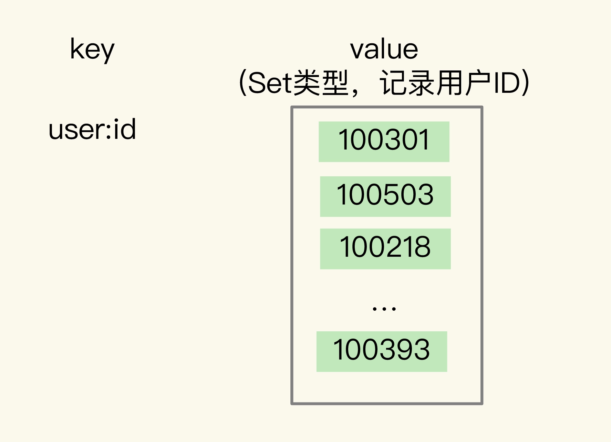
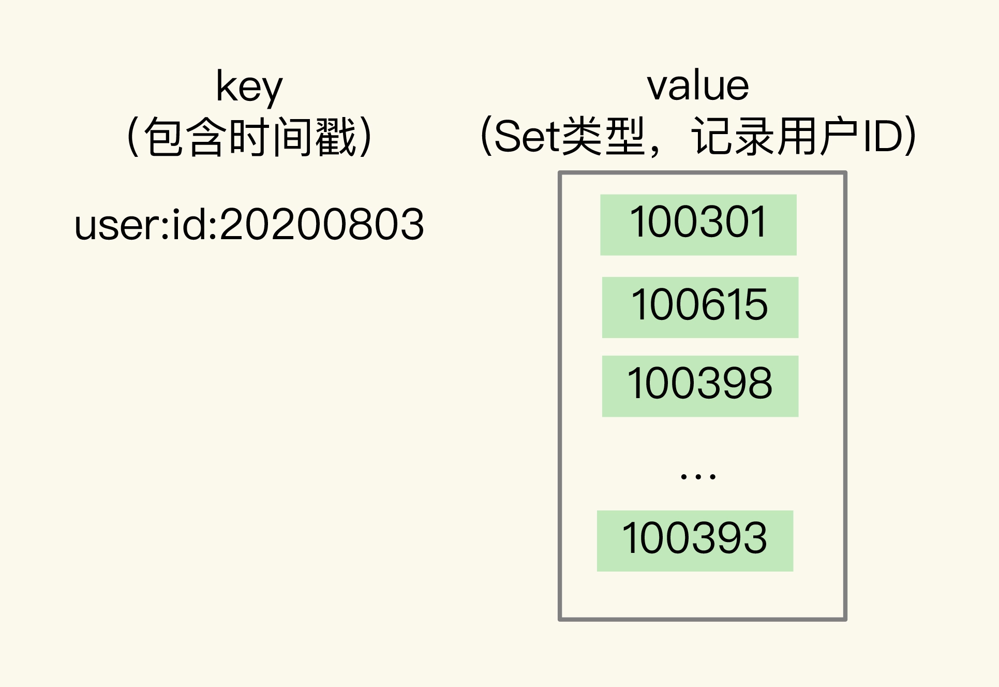
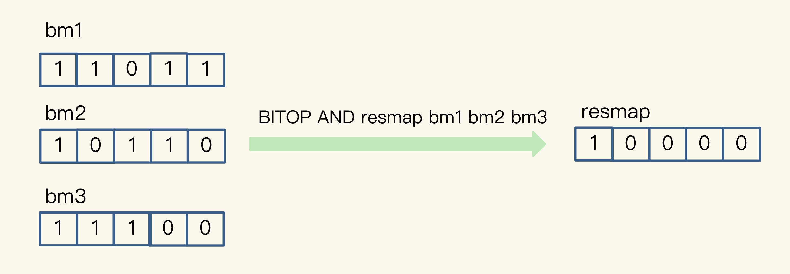
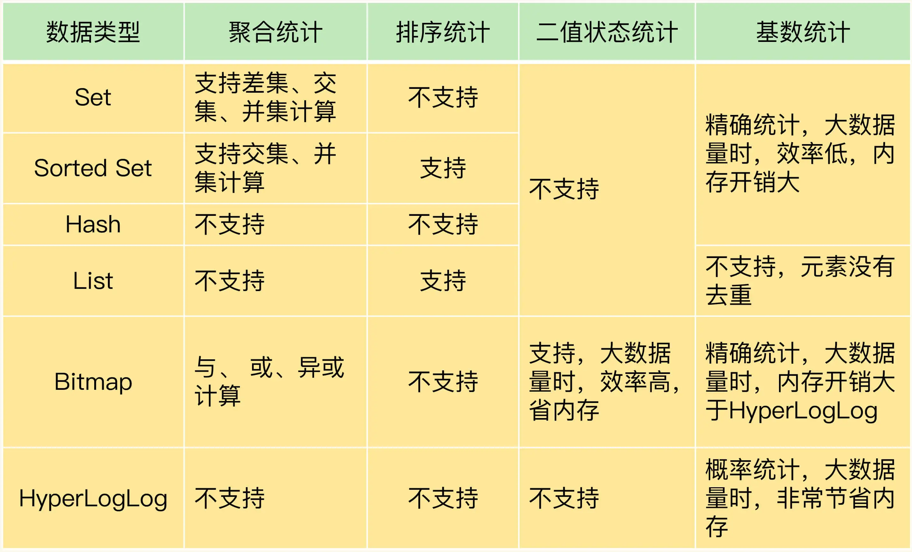

- 00 开篇词 这样学Redis，才能技高一筹.md
- 01 基本架构：一个键值数据库包含什么？.md
- 02 数据结构：快速的Redis有哪些慢操作？.md
- 03 高性能IO模型：为什么单线程Redis能那么快？.md
- 04 AOF日志：宕机了，Redis如何避免数据丢失？.md
- 05 内存快照：宕机后，Redis如何实现快速恢复？.md
- 06 数据同步：主从库如何实现数据一致？.md
- 07 哨兵机制：主库挂了，如何不间断服务？.md
- 08 哨兵集群：哨兵挂了，主从库还能切换吗？.md
- 09 切片集群：数据增多了，是该加内存还是加实例？.md
- 10 第1～9讲课后思考题答案及常见问题答疑.md
- 11 “万金油”的String，为什么不好用了？.md
- 12 有一亿个keys要统计，应该用哪种集合？.md
- 13 GEO是什么？还可以定义新的数据类型吗？.md
- 14 如何在Redis中保存时间序列数据？.md
- 15 消息队列的考验：Redis有哪些解决方案？.md
- 16 异步机制：如何避免单线程模型的阻塞？.md
- 17 为什么CPU结构也会影响Redis的性能？.md
- 18 波动的响应延迟：如何应对变慢的Redis？（上）.md
- 19 波动的响应延迟：如何应对变慢的Redis？（下）.md
- 20 删除数据后，为什么内存占用率还是很高？.md
- 21 缓冲区：一个可能引发“惨案”的地方.md
- 22 第11～21讲课后思考题答案及常见问题答疑.md
- 23 旁路缓存：Redis是如何工作的？.md
- 24 替换策略：缓存满了怎么办？.md
- 25 缓存异常（上）：如何解决缓存和数据库的数据不一致问题？.md
- 26 缓存异常（下）：如何解决缓存雪崩、击穿、穿透难题？.md
- 27 缓存被污染了，该怎么办？.md
- 28 Pika：如何基于SSD实现大容量Redis？.md
- 29 无锁的原子操作：Redis如何应对并发访问？.md
- 30 如何使用Redis实现分布式锁？.md
- 31 事务机制：Redis能实现ACID属性吗？.md
- 32 Redis主从同步与故障切换，有哪些坑？.md
- 33 脑裂：一次奇怪的数据丢失.md
- 34 第23~33讲课后思考题答案及常见问题答疑.md
- 35 Codis VS Redis Cluster：我该选择哪一个集群方案？.md
- 36 Redis支撑秒杀场景的关键技术和实践都有哪些？.md
- 37 数据分布优化：如何应对数据倾斜？.md
- 38 通信开销：限制Redis Cluster规模的关键因素.md
- 39 Redis 6.0的新特性：多线程、客户端缓存与安全.md
- 40 Redis的下一步：基于NVM内存的实践.md
- 41 第35～40讲课后思考题答案及常见问题答疑.md
- 加餐 01 经典的Redis学习资料有哪些？.md
- 加餐 02 用户Kaito：我是如何学习Redis的？.md
- 加餐 03 用户Kaito：我希望成为在压力中成长的人.md
- 加餐 04 Redis客户端如何与服务器端交换命令和数据？.md
- 加餐 05 Redis有哪些好用的运维工具？.md
- 加餐 06 Redis的使用规范小建议.md
- 加餐 07 从微博的Redis实践中，我们可以学到哪些经验？.md
- 结束语 从学习Redis到向Redis学习.md
12 有一亿个keys要统计，应该用哪种集合？
在 Web 和移动应用的业务场景中，我们经常需要保存这样一种信息：一个 key 对应了一个数据集合。我举几个例子。
- 手机 App 中的每天的用户登录信息：一天对应一系列用户 ID 或移动设备 ID；
- 电商网站上商品的用户评论列表：一个商品对应了一系列的评论；
- 用户在手机 App 上的签到打卡信息：一天对应一系列用户的签到记录；
- 应用网站上的网页访问信息：一个网页对应一系列的访问点击。
我们知道，Redis 集合类型的特点就是一个键对应一系列的数据，所以非常适合用来存取这些数据。但是，在这些场景中，除了记录信息，我们往往还需要对集合中的数据进行统计，例如：
- 在移动应用中，需要统计每天的新增用户数和第二天的留存用户数；
- 在电商网站的商品评论中，需要统计评论列表中的最新评论；
- 在签到打卡中，需要统计一个月内连续打卡的用户数；
- 在网页访问记录中，需要统计独立访客（Unique Visitor，UV）量。
通常情况下，我们面临的用户数量以及访问量都是巨大的，比如百万、千万级别的用户数量，或者千万级别、甚至亿级别的访问信息。所以，我们必须要选择能够非常高效地统计大量数据（例如亿级）的集合类型。
要想选择合适的集合，我们就得了解常用的集合统计模式。这节课，我就给你介绍集合类型常见的四种统计模式，包括聚合统计、排序统计、二值状态统计和基数统计。我会以刚刚提到的这四个场景为例，和你聊聊在这些统计模式下，什么集合类型能够更快速地完成统计，而且还节省内存空间。掌握了今天的内容，之后再遇到集合元素统计问题时，你就能很快地选出合适的集合类型了。
聚合统计
我们先来看集合元素统计的第一个场景：聚合统计。
所谓的聚合统计，就是指统计多个集合元素的聚合结果，包括：统计多个集合的共有元素（交集统计）；把两个集合相比，统计其中一个集合独有的元素（差集统计）；统计多个集合的所有元素（并集统计）。
在刚才提到的场景中，统计手机 App 每天的新增用户数和第二天的留存用户数，正好对应了聚合统计。
要完成这个统计任务，我们可以用一个集合记录所有登录过 App 的用户 ID，同时，用另一个集合记录每一天登录过 App 的用户 ID。然后，再对这两个集合做聚合统计。我们来看下具体的操作。
记录所有登录过 App 的用户 ID 还是比较简单的，我们可以直接使用 Set 类型，把 key 设置为 user:id，表示记录的是用户 ID，value 就是一个 Set 集合，里面是所有登录过 App 的用户 ID，我们可以把这个 Set 叫作累计用户 Set，如下图所示：

需要注意的是，累计用户 Set 中没有日期信息，我们是不能直接统计每天的新增用户的。所以，我们还需要把每一天登录的用户 ID，记录到一个新集合中，我们把这个集合叫作每日用户 Set，它有两个特点：
key 是 user:id 以及当天日期，例如
user:id:20200803；value 是 Set 集合，记录当天登录的用户 ID。

在统计每天的新增用户时，我们只用计算每日用户 Set 和累计用户 Set 的差集就行。
我借助一个具体的例子来解释一下。
假设我们的手机 App 在 2020 年 8 月 3 日上线，那么，8 月 3 日前是没有用户的。此时，累计用户 Set 是空集，当天登录的用户 ID 会被记录到 key 为 user:id:20200803 的 Set 中。所以，user:id:20200803 这个 Set 中的用户就是当天的新增用户。
然后，我们计算累计用户 Set 和 user:id:20200803 Set 的并集结果，结果保存在 user:id 这个累计用户 Set 中，如下所示：
SUNIONSTORE user:id user:id user:id:20200803
此时，user:id 这个累计用户 Set 中就有了 8 月 3 日的用户 ID。等到 8 月 4 日再统计时，我们把 8 月 4 日登录的用户 ID 记录到 user:id:20200804 的 Set 中。接下来，我们执行 SDIFFSTORE 命令计算累计用户 Set 和 user:id:20200804 Set 的差集，结果保存在 key 为 user:new 的 Set 中，如下所示：
SDIFFSTORE user:new user:id:20200804 user:id
可以看到，这个差集中的用户 ID 在 user:id:20200804 的 Set 中存在，但是不在累计用户 Set 中。所以，user:new 这个 Set 中记录的就是 8 月 4 日的新增用户。
当要计算 8 月 4 日的留存用户时，我们只需要再计算 user:id:20200803 和 user:id:20200804 两个 Set 的交集，就可以得到同时在这两个集合中的用户 ID 了，这些就是在 8 月 3 日登录，并且在 8 月 4 日留存的用户。执行的命令如下：
SINTERSTORE user:id:rem user:id:20200803 user:id:20200804
当你需要对多个集合进行聚合计算时，Set 类型会是一个非常不错的选择。不过，我要提醒你一下，这里有一个潜在的风险。
Set 的差集、并集和交集的计算复杂度较高，在数据量较大的情况下，如果直接执行这些计算，会导致 Redis 实例阻塞。所以，我给你分享一个小建议：你可以从主从集群中选择一个从库，让它专门负责聚合计算，或者是把数据读取到客户端，在客户端来完成聚合统计，这样就可以规避阻塞主库实例和其他从库实例的风险了。
排序统计
接下来，我们再来聊一聊应对集合元素排序需求的方法。我以在电商网站上提供最新评论列表的场景为例，进行讲解。
最新评论列表包含了所有评论中的最新留言，这就要求集合类型能对元素保序，也就是说，集合中的元素可以按序排列，这种对元素保序的集合类型叫作有序集合。
在 Redis 常用的 4 个集合类型中（List、Hash、Set、Sorted Set），List 和 Sorted Set 就属于有序集合。
List 是按照元素进入 List 的顺序进行排序的，而 Sorted Set 可以根据元素的权重来排序，我们可以自己来决定每个元素的权重值。比如说，我们可以根据元素插入 Sorted Set 的时间确定权重值，先插入的元素权重小，后插入的元素权重大。
看起来好像都可以满足需求，我们该怎么选择呢？
我先说说用 List 的情况。每个商品对应一个 List，这个 List 包含了对这个商品的所有评论，而且会按照评论时间保存这些评论，每来一个新评论，就用 LPUSH 命令把它插入 List 的队头。
在只有一页评论的时候，我们可以很清晰地看到最新的评论，但是，在实际应用中，网站一般会分页显示最新的评论列表，一旦涉及到分页操作，List 就可能会出现问题了。
假设当前的评论 List 是{A, B, C, D, E, F}（其中，A 是最新的评论，以此类推，F 是最早的评论），在展示第一页的 3 个评论时，我们可以用下面的命令，得到最新的三条评论 A、B、C：
LRANGE product1 0 2
1) "A"
2) "B"
3) "C"
然后，再用下面的命令获取第二页的 3 个评论，也就是 D、E、F。
LRANGE product1 3 5
1) "D"
2) "E"
3) "F"
但是，如果在展示第二页前，又产生了一个新评论 G，评论 G 就会被 LPUSH 命令插入到评论 List 的队头，评论 List 就变成了{G, A, B, C, D, E, F}。此时，再用刚才的命令获取第二页评论时，就会发现，评论 C 又被展示出来了，也就是 C、D、E。
LRANGE product1 3 5
1) "C"
2) "D"
3) "E"
之所以会这样，关键原因就在于，List 是通过元素在 List 中的位置来排序的，当有一个新元素插入时，原先的元素在 List 中的位置都后移了一位，比如说原来在第 1 位的元素现在排在了第 2 位。所以，对比新元素插入前后，List 相同位置上的元素就会发生变化，用 LRANGE 读取时，就会读到旧元素。
和 List 相比，Sorted Set 就不存在这个问题，因为它是根据元素的实际权重来排序和获取数据的。
我们可以按评论时间的先后给每条评论设置一个权重值，然后再把评论保存到 Sorted Set 中。Sorted Set 的 ZRANGEBYSCORE 命令就可以按权重排序后返回元素。这样的话，即使集合中的元素频繁更新，Sorted Set 也能通过 ZRANGEBYSCORE 命令准确地获取到按序排列的数据。
假设越新的评论权重越大，目前最新评论的权重是 N，我们执行下面的命令时，就可以获得最新的 10 条评论：
ZRANGEBYSCORE comments N-9 N
所以，在面对需要展示最新列表、排行榜等场景时，如果数据更新频繁或者需要分页显示，建议你优先考虑使用 Sorted Set。
二值状态统计
现在，我们再来分析下第三个场景：二值状态统计。这里的二值状态就是指集合元素的取值就只有 0 和 1 两种。在签到打卡的场景中，我们只用记录签到（1）或未签到（0），所以它就是非常典型的二值状态，
在签到统计时，每个用户一天的签到用 1 个 bit 位就能表示，一个月（假设是 31 天）的签到情况用 31 个 bit 位就可以，而一年的签到也只需要用 365 个 bit 位，根本不用太复杂的集合类型。这个时候，我们就可以选择 Bitmap。这是 Redis 提供的扩展数据类型。我来给你解释一下它的实现原理。
Bitmap 本身是用 String 类型作为底层数据结构实现的一种统计二值状态的数据类型。String 类型是会保存为二进制的字节数组，所以，Redis 就把字节数组的每个 bit 位利用起来，用来表示一个元素的二值状态。你可以把 Bitmap 看作是一个 bit 数组。
Bitmap 提供了 GETBIT/SETBIT 操作，使用一个偏移值 offset 对 bit 数组的某一个 bit 位进行读和写。不过，需要注意的是，Bitmap 的偏移量是从 0 开始算的，也就是说 offset 的最小值是 0。当使用 SETBIT 对一个 bit 位进行写操作时，这个 bit 位会被设置为 1。Bitmap 还提供了 BITCOUNT 操作，用来统计这个 bit 数组中所有“1”的个数。
那么，具体该怎么用 Bitmap 进行签到统计呢？我还是借助一个具体的例子来说明。
假设我们要统计 ID 3000 的用户在 2020 年 8 月份的签到情况，就可以按照下面的步骤进行操作。
第一步，执行下面的命令，记录该用户 8 月 3 号已签到。
SETBIT uid:sign:3000:202008 2 1
第二步，检查该用户 8 月 3 日是否签到。
GETBIT uid:sign:3000:202008 2
第三步，统计该用户在 8 月份的签到次数。
BITCOUNT uid:sign:3000:202008
这样，我们就知道该用户在 8 月份的签到情况了，是不是很简单呢？接下来，你可以再思考一个问题：如果记录了 1 亿个用户 10 天的签到情况，你有办法统计出这 10 天连续签到的用户总数吗？
在介绍具体的方法之前，我们要先知道，Bitmap 支持用 BITOP 命令对多个 Bitmap 按位做“与”“或”“异或”的操作，操作的结果会保存到一个新的 Bitmap 中。
我以按位“与”操作为例来具体解释一下。从下图中，可以看到，三个 Bitmap bm1、bm2 和 bm3，对应 bit 位做“与”操作，结果保存到了一个新的 Bitmap 中（示例中，这个结果 Bitmap 的 key 被设为“resmap”）。

回到刚刚的问题，在统计 1 亿个用户连续 10 天的签到情况时，你可以把每天的日期作为 key，每个 key 对应一个 1 亿位的 Bitmap，每一个 bit 对应一个用户当天的签到情况。
接下来，我们对 10 个 Bitmap 做“与”操作，得到的结果也是一个 Bitmap。在这个 Bitmap 中，只有 10 天都签到的用户对应的 bit 位上的值才会是 1。最后，我们可以用 BITCOUNT 统计下 Bitmap 中的 1 的个数，这就是连续签到 10 天的用户总数了。
现在，我们可以计算一下记录了 10 天签到情况后的内存开销。每天使用 1 个 1 亿位的 Bitmap，大约占 12MB 的内存（10^8/8/1024/1024），10 天的 Bitmap 的内存开销约为 120MB，内存压力不算太大。不过，在实际应用时，最好对 Bitmap 设置过期时间，让 Redis 自动删除不再需要的签到记录，以节省内存开销。
所以，如果只需要统计数据的二值状态，例如商品有没有、用户在不在等，就可以使用 Bitmap，因为它只用一个 bit 位就能表示 0 或 1。在记录海量数据时，Bitmap 能够有效地节省内存空间。
基数统计
最后，我们再来看一个统计场景：基数统计。基数统计就是指统计一个集合中不重复的元素个数。对应到我们刚才介绍的场景中，就是统计网页的 UV。
网页 UV 的统计有个独特的地方，就是需要去重，一个用户一天内的多次访问只能算作一次。在 Redis 的集合类型中，Set 类型默认支持去重，所以看到有去重需求时，我们可能第一时间就会想到用 Set 类型。
我们来结合一个例子看一看用 Set 的情况。
有一个用户 user1 访问 page1 时，你把这个信息加到 Set 中：`
SADD page1:uv user1
用户 1 再来访问时，Set 的去重功能就保证了不会重复记录用户 1 的访问次数，这样，用户 1 就算是一个独立访客。当你需要统计 UV 时，可以直接用 SCARD 命令，这个命令会返回一个集合中的元素个数。
但是，如果 page1 非常火爆，UV 达到了千万，这个时候，一个 Set 就要记录千万个用户 ID。对于一个搞大促的电商网站而言，这样的页面可能有成千上万个，如果每个页面都用这样的一个 Set，就会消耗很大的内存空间。
当然，你也可以用 Hash 类型记录 UV。
例如，你可以把用户 ID 作为 Hash 集合的 key，当用户访问页面时，就用 HSET 命令（用于设置 Hash 集合元素的值），对这个用户 ID 记录一个值“1”，表示一个独立访客，用户 1 访问 page1 后，我们就记录为 1 个独立访客，如下所示：
HSET page1:uv user1 1
即使用户 1 多次访问页面，重复执行这个 HSET 命令，也只会把 user1 的值设置为 1，仍然只记为 1 个独立访客。当要统计 UV 时，我们可以用 HLEN 命令统计 Hash 集合中的所有元素个数。
但是，和 Set 类型相似，当页面很多时，Hash 类型也会消耗很大的内存空间。那么，有什么办法既能完成统计，还能节省内存吗？
这时候，就要用到 Redis 提供的 HyperLogLog 了。
HyperLogLog 是一种用于统计基数的数据集合类型，它的最大优势就在于，当集合元素数量非常多时，它计算基数所需的空间总是固定的，而且还很小。
在 Redis 中，每个 HyperLogLog 只需要花费 12 KB 内存，就可以计算接近 2^64 个元素的基数。你看，和元素越多就越耗费内存的 Set 和 Hash 类型相比，HyperLogLog 就非常节省空间。
在统计 UV 时，你可以用 PFADD 命令（用于向 HyperLogLog 中添加新元素）把访问页面的每个用户都添加到 HyperLogLog 中。
PFADD page1:uv user1 user2 user3 user4 user5
接下来，就可以用 PFCOUNT 命令直接获得 page1 的 UV 值了，这个命令的作用就是返回 HyperLogLog 的统计结果。
PFCOUNT page1:uv
关于 HyperLogLog 的具体实现原理，你不需要重点掌握，不会影响到你的日常使用，我就不多讲了。如果你想了解一下，课下可以看看这条链接。
不过，有一点需要你注意一下，HyperLogLog 的统计规则是基于概率完成的，所以它给出的统计结果是有一定误差的，标准误算率是 0.81%。这也就意味着，你使用 HyperLogLog 统计的 UV 是 100 万，但实际的 UV 可能是 101 万。虽然误差率不算大，但是，如果你需要精确统计结果的话，最好还是继续用 Set 或 Hash 类型。
小结
这节课，我们结合统计新增用户数和留存用户数、最新评论列表、用户签到数以及网页独立访客量这 4 种典型场景，学习了集合类型的 4 种统计模式，分别是聚合统计、排序统计、二值状态统计和基数统计。为了方便你掌握，我把 Set、Sorted Set、Hash、List、Bitmap、HyperLogLog 的支持情况和优缺点汇总在了下面的表格里，希望你把这张表格保存下来，时不时地复习一下。

可以看到，Set 和 Sorted Set 都支持多种聚合统计，不过，对于差集计算来说，只有 Set 支持。Bitmap 也能做多个 Bitmap 间的聚合计算，包括与、或和异或操作。
当需要进行排序统计时，List 中的元素虽然有序，但是一旦有新元素插入，原来的元素在 List 中的位置就会移动，那么，按位置读取的排序结果可能就不准确了。而 Sorted Set 本身是按照集合元素的权重排序，可以准确地按序获取结果，所以建议你优先使用它。
如果我们记录的数据只有 0 和 1 两个值的状态，Bitmap 会是一个很好的选择，这主要归功于 Bitmap 对于一个数据只用 1 个 bit 记录，可以节省内存。
对于基数统计来说，如果集合元素量达到亿级别而且不需要精确统计时，我建议你使用 HyperLogLog。
当然，Redis 的应用场景非常多，这张表中的总结不一定能覆盖到所有场景。我建议你也试着自己画一张表，把你遇到的其他场景添加进去。长久积累下来，你一定能够更加灵活地把集合类型应用到合适的实践项目中。
每课一问
依照惯例，我给你留个小问题。这节课，我们学习了 4 种典型的统计模式，以及各种集合类型的支持情况和优缺点，我想请你聊一聊，你还遇到过其他的统计场景吗？用的是怎样的集合类型呢？
欢迎你在留言区写下你的思考和答案，和我交流讨论。如果你身边还有需要解决这些统计问题的朋友或同事，也欢迎你把今天的内容分享给他 / 她，我们下节课见。
© 2019 - 2023 Liangliang Lee. Powered by gin and hexo-theme-book.